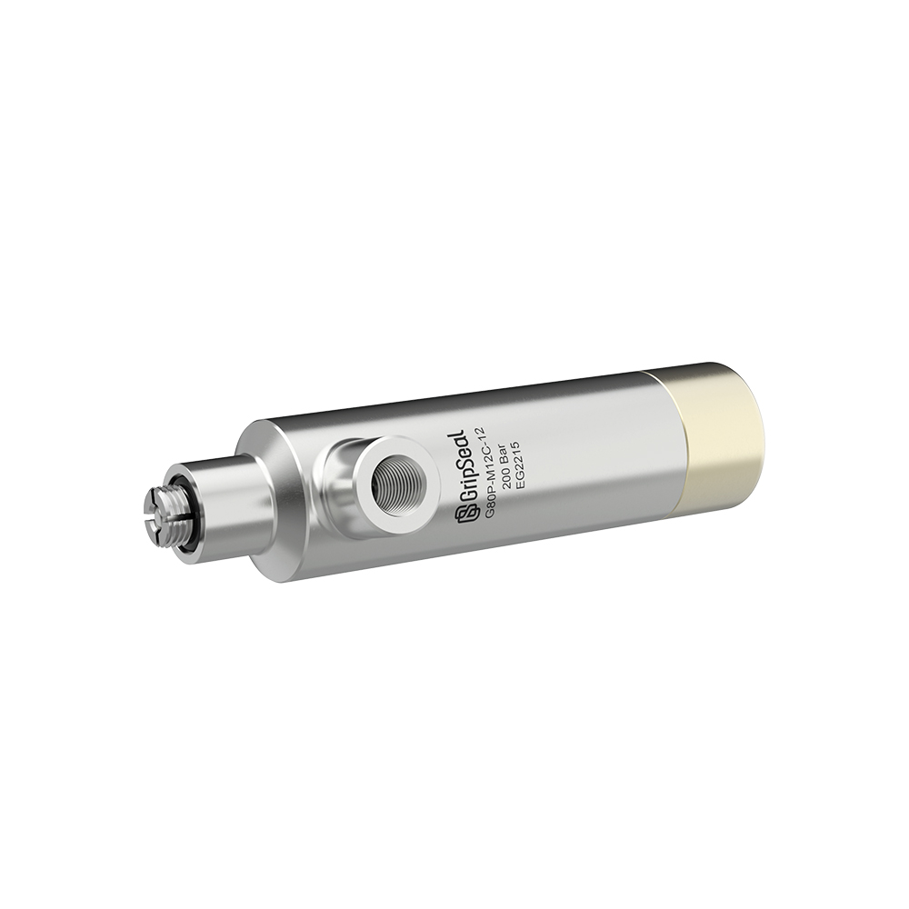
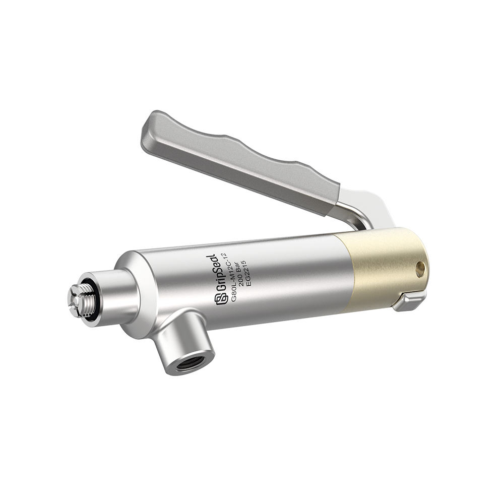

Model Overview
One-Second Connection for Female Threads
The G80 route is used when an internally threaded workpiece needs fast sealing without repeatedly screwing a test hose or adapter into the port.
Quick Facts
Request G80 Selection Help
Typical Application Fit
Use this model family for female threaded ports where cycle time, thread protection, and repeatable sealing are more important than low-cost threaded adapters.